Introdução à eletrônica
Eletrônica
básica e Sistemas Embarcados
Entenda como tensão, corrente e componentes trabalham juntos para transformar energia em comportamento.
Professor Doutor Roberto Cândido
→ ou espaço para avançar · G visão geral
Fundamentos
O que é eletrônica?
Eletrônica estuda e utiliza circuitos para controlar o movimento dos sinais elétricos e produzir funções úteis.
- Receber energia e sinais do ambiente
- Processar ou modificar esses sinais
- Produzir uma resposta: luz, som, movimento ou comunicação
if (botao == HIGH) {
acenderLED();
}Fundamentos
Três ideias para entender um circuito
TENSÃO (V)
A diferença de potencial que impulsiona as cargas.
Volt (V)CORRENTE (I)
O fluxo de carga elétrica pelo circuito.
Ampère (A)RESISTÊNCIA (R)
A oposição à passagem da corrente.
Ohm (Ω)Fundamentos
Lei de Ohm
Tensão = resistência × corrente
- Se a tensão aumenta e a resistência permanece igual, a corrente aumenta.
- Se a resistência aumenta e a tensão permanece igual, a corrente diminui.
Uma fonte de 5 V ligada a um resistor de 220 Ω:
I = V / R
I = 5 / 220 ≈ 0,023 A
I ≈ 23 mA
Fundamentos
O que um circuito precisa?
Para a corrente circular, deve existir um caminho condutor fechado e uma fonte de energia.
Caminho fechado
A corrente sai da fonte, passa pelo resistor e pelo LED e volta à fonte.
Circuito aberto
Se houver uma interrupção, a corrente deixa de circular.
Peer Instruction · Pergunta 1 de 5
A ordem importa?
Em um circuito em série (fonte, resistor e LED), o resistor está antes do LED. Se ele for trocado de lugar e ficar depois do LED, o que acontece?
O LED queima, porque a corrente chega nele sem limite
Nada muda
O LED acende mais fraco
O circuito para de funcionar
1º voto individual → discuta com um colega → 2º voto
Peer Instruction · Pergunta 2 de 5
Chave aberta
Um circuito tem fonte de 5 V, resistor, LED e uma chave, todos em série. Com a chave aberta, qual tensão um multímetro mede entre os terminais da chave?
0 V, porque não há corrente
2,5 V
≈ 5 V
Depende da cor do LED
1º voto individual → discuta com um colega → 2º voto
Fundamentos
Componentes básicos e suas funções
Clique em cada componente para vê-lo em ação.
Fundamentos
Por que o LED precisa de resistor?
O LED não deve ser ligado diretamente a uma fonte sem limitar a corrente.
Fonte: 5 V
Queda no LED: 2 V
Corrente desejada: 0,014 A
R = (5 − 2) / 0,014 ≈ 214 Ω
Peer Instruction · Pergunta 3 de 5
Resistor maior
No circuito do LED com fonte de 5 V, alguém usa um resistor de 1 kΩ no lugar do de 220 Ω. O que acontece?
O LED queima
O LED acende mais fraco
O LED não acende
Nada muda
1º voto individual → discuta com um colega → 2º voto
Componentes
LED: transformar corrente em luz
Diodo emissor de luz: componente polarizado, que conduz principalmente em um sentido.
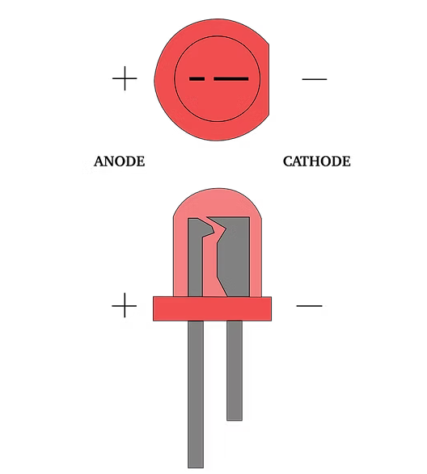
Ânodo (+)
Cátodo (−)
O terminal mais longo costuma ser o ânodo; o lado achatado costuma indicar o cátodo.
- Uso: indicadores, semáforos e feedback visual.
- Polarização direta: ânodo em potencial mais alto que o cátodo.
- Use resistor em série para limitar a corrente.
- Invertido, normalmente não acende; tensão reversa excessiva pode danificá-lo.
Componentes
Resistores: limitar e ajustar corrente
Componente passivo que oferece resistência à corrente; em geral, não tem polaridade.
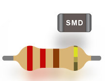
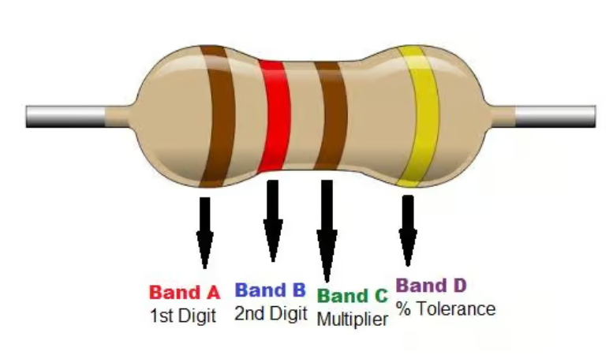
- Uso: limitar corrente de LEDs e formar divisores de tensão.
- Unidade: ohm (Ω); 1 kΩ = 1.000 Ω.
- Lei de Ohm: I = V / R.
- Confira também a potência nominal do resistor.
- Pode ser conectado em qualquer sentido.
Componentes
Potenciômetro: resistência ajustável
Possui três terminais: duas extremidades resistivas e um cursor móvel.
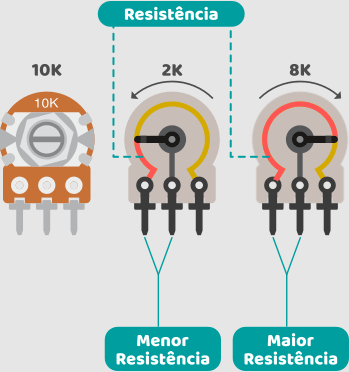
- Uso: ajustar volume, brilho, limiar ou referência.
- Como divisor de tensão, ligue as extremidades à alimentação e GND.
- Leia o cursor em uma entrada analógica compatível.
Componentes
Capacitores: armazenar carga e filtrar
A tensão no capacitor varia ao longo do tempo; a capacitância é medida em farads (F).
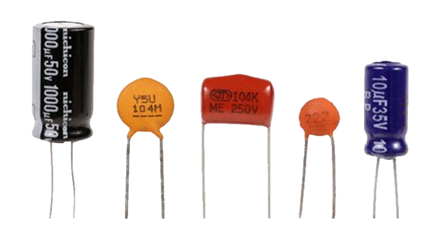
Eletrolíticos normalmente são polarizados; cerâmicos comuns geralmente não.
- Uso: filtragem, desacoplamento, temporização e suavização de sinais.
- Eletrolítico: respeite +, − e tensão máxima.
- Cerâmico comum: geralmente não tem polaridade.
- Em um circuito RC, a constante de tempo é τ = R × C.
Peer Instruction · Pergunta 4 de 5
Constante de tempo
Em um circuito RC, a resistência R é dobrada e a capacitância C é reduzida à metade. O que acontece com o tempo de carga do capacitor?
Dobra
Cai pela metade
Fica igual
Quadruplica
1º voto individual → discuta com um colega → 2º voto
Componentes
Diodos: conduzir preferencialmente em um sentido
O diodo comum conduz em polarização direta e bloqueia em reversa, dentro de seus limites.
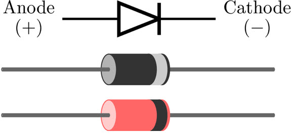
Ânodo (A)
Cátodo (K)
A faixa no corpo costuma marcar o cátodo.
- Uso: retificação, proteção contra inversão e supressão de transientes.
- Direta: ânodo mais positivo que o cátodo.
- Reversa: bloqueia até atingir o limite de ruptura.
Valores ilustrativos de um diodo de silício; o limite de ruptura varia muito entre modelos.
Componentes
Transistores: controlar correntes maiores
Um sinal de controle pode comandar uma corrente maior, com o circuito dimensionado corretamente.
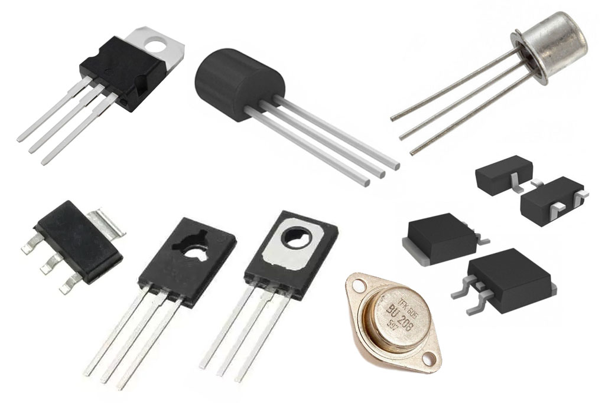
- BJT: base, coletor e emissor; corrente de base controla a condução.
- MOSFET: gate, drain e source; tensão no gate controla o canal.
- Uso: chavear motores, solenoides e LEDs de potência com interface adequada.
Componentes
Relés: controlar um circuito com outro
Relés eletromecânicos usam uma bobina para movimentar contatos; módulos podem incluir driver.
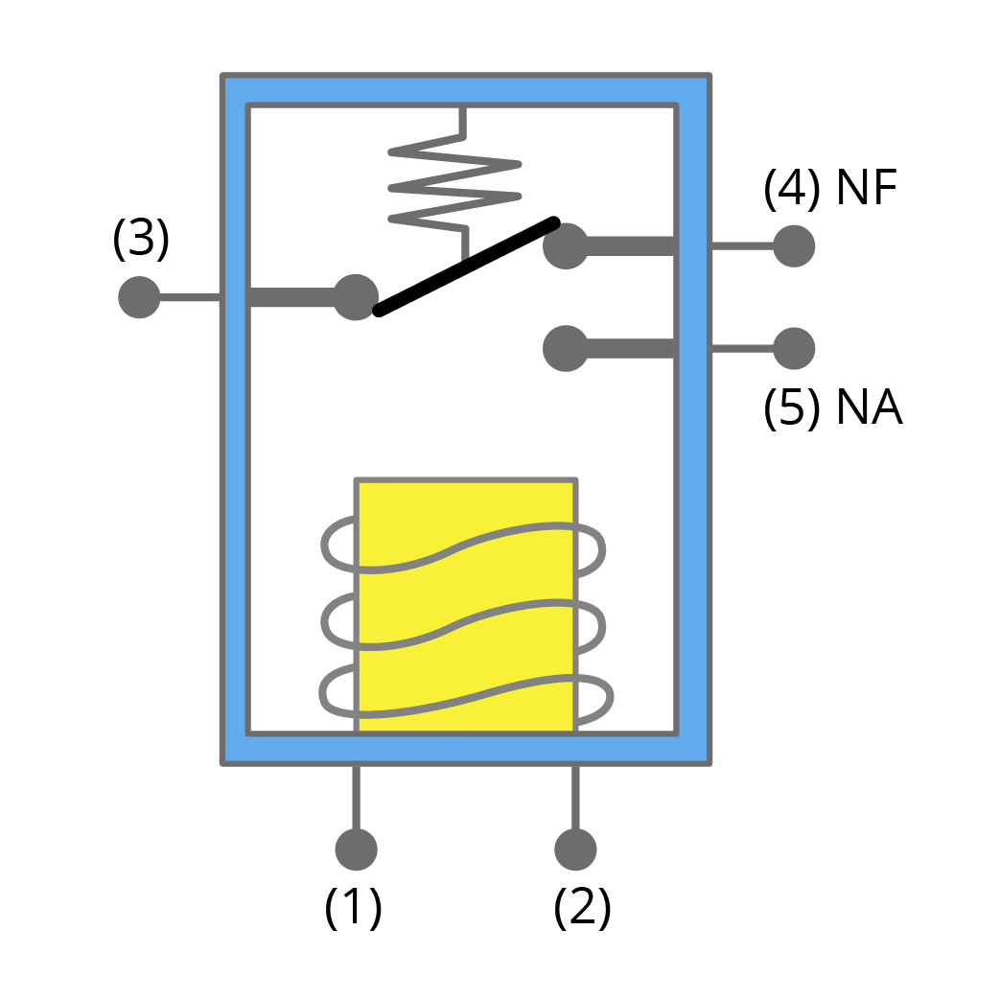
COM: comum
NA: normalmente aberto
NF: normalmente fechado
- Uso: ligar/desligar cargas; isolamento depende do projeto e módulo.
- A bobina pode precisar de transistor driver e alimentação própria.
- Em bobinas DC, use proteção contra sobretensão, como diodo de flyback.
Peer Instruction · Pergunta 5 de 5
NF ou NA?
Em operação normal, o Arduino mantém a bobina de um relé energizada. Uma luz de emergência deve acender se o Arduino desligar. Em qual contato do relé ela deve ser ligada?
NA (normalmente aberto)
NF (normalmente fechado)
COM (comum)
Tanto faz
1º voto individual → discuta com um colega → 2º voto
Microcontroladores e Arduino
Microcontroladores
Um microcontrolador é um pequeno computador integrado em um único chip, projetado para controlar dispositivos eletrônicos e executar tarefas específicas.
Ele consegue receber informações de sensores, processar essas informações de acordo com um programa e controlar componentes como LEDs, motores, displays e relés.
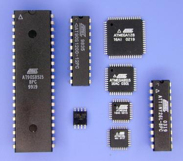
Microcontroladores e Arduino
Arduino: do código ao mundo físico
Arduino é uma plataforma de prototipagem que combina uma placa eletrônica, um microcontrolador e ferramentas de programação.
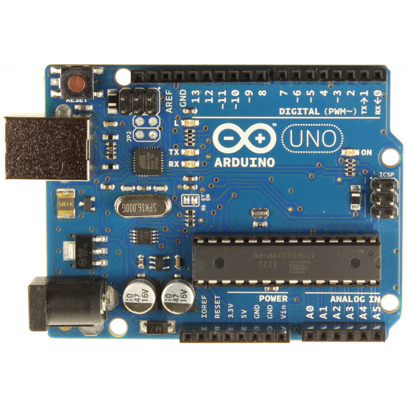
- O programa define como a placa deve reagir.
- Os pinos conectam o programa a sensores e atuadores.
- O circuito transforma instruções em ações físicas.
Microcontroladores e Arduino
Aplicações de sistemas embarcados
CASA INTELIGENTE
Iluminação automática, alarmes e controle de temperatura.
AGRICULTURA
Umidade do solo, irrigação e monitoramento ambiental.
INDÚSTRIA
Monitoramento de máquinas, contagem e automação simples.
ROBÓTICA
Motores, sensores de distância e desvio de obstáculos.
Também aparece em protótipos educacionais, experimentos científicos, instalações interativas e dispositivos conectados.
Microcontroladores e Arduino
O que existe dentro da placa?
O microcontrolador é um pequeno computador em um único chip, projetado para controlar tarefas específicas.
CPU
Executa instruções
MEMÓRIA
Guarda programa e dados
ENTRADAS / SAÍDAS
Conecta sensores e atuadores
TEMPORIZADORES
Conta tempo e gera sinais
Microcontroladores e Arduino
Arduino UNO Rev3: pinagem
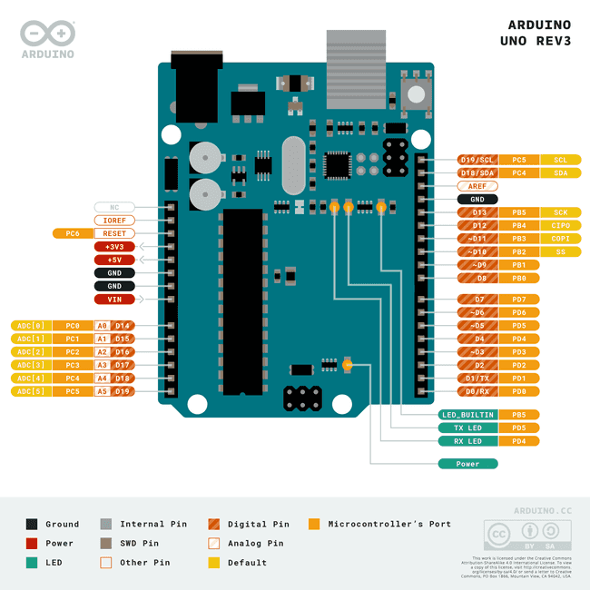
Microcontroladores e Arduino
Pinos digitais e analógicos
DIGITAL
Lê ou produz estados lógicos, como LOW e HIGH.
Ex.: botão e LED.
ANALÓGICO
Lê uma faixa de tensão e converte em um valor numérico.
Ex.: potenciômetro e sensor de luz.
PWM
Gera pulsos com ciclo de trabalho ajustável em pinos compatíveis.
Ex.: brilho de LED e velocidade de motor com driver.
Microcontroladores e Arduino
Como alimentar a placa e os componentes
USB
Útil para programar e alimentar protótipos de baixo consumo.
FONTE EXTERNA
Use a entrada e a faixa de tensão recomendadas para o modelo da placa.
ALIMENTAÇÃO DO CIRCUITO
Confira tensão, corrente disponível e necessidade de GND comum.
Cuidados essenciais
- Não aplique 5 V a um pino de 3,3 V se ele não for tolerante a essa tensão.
- Não alimente motores diretamente por um pino de I/O.
- Evite curto entre 5 V, VIN e GND; consulte a documentação da placa.
Sensores, atuadores e dados
Sensores: como o Arduino percebe o ambiente
Sensor é o componente que converte uma grandeza física em um sinal que o sistema pode interpretar.
LUZ
LDR / sensor digital
Iluminação automática
TEMPERATURA
termistor / sensor digital
Monitoramento térmico
DISTÂNCIA
ultrassônico
Robô evita obstáculos
UMIDADE
solo / ar
Irrigação e ambiente
Sensores, atuadores e dados
Atuadores: como o Arduino age no ambiente
LED / DISPLAY
Sinalização visual
BUZZER
Alertas sonoros
SERVO / MOTOR
Movimento mecânico
RELÉ / DRIVER
Acionamento de cargas
O microcontrolador geralmente envia um sinal de controle; o atuador pode exigir um estágio de potência separado.
Sensores, atuadores e dados
Do sensor ao dado
Exemplo: medir a temperatura a cada 5 segundos e enviar as leituras para o computador pela porta Serial.
Internet das Coisas
IoT
A Internet das Coisas (IoT — Internet of Things) é o conceito de conectar objetos físicos à internet para que eles possam coletar dados, trocar informações, ser monitorados e executar ações automaticamente.
Esses objetos podem ser eletrodomésticos, sensores, máquinas industriais, veículos, equipamentos agrícolas ou dispositivos vestíveis, como relógios inteligentes.